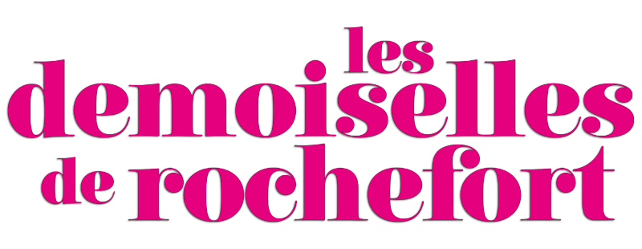

Poesia, musicalidade e finesse. Eis "Les Demoiselles de Rochefort" (FRA, 1967), uma das maiores pérolas do cineasta Jacques Demy. Brilhante romance musical: o cenário francês da época, as cores, a distinta arte - enfim, uma obra encantadora. Trata-se de um longa-metragem digno de todos aqueles que apreciam uma boa e requintada película repleta de charme e mistério.
x